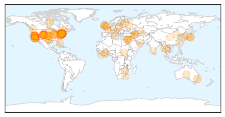
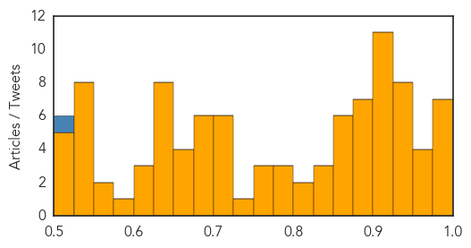
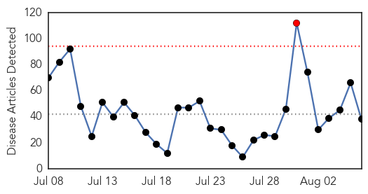
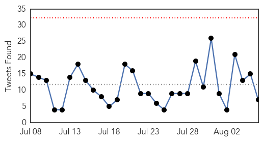
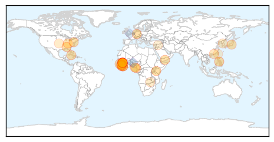
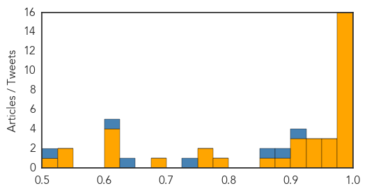

Unknown
30-Day Web Trend
0 alerts, 0 warnings

30-Day Twitter Trend
0 alerts, 0 warnings

Article Locations
Article Confidences
Top Articles:
- 0.997
- 97 Sick, 8 dead in NYC Legionnaires' outbreak: Officials
- 0.995
- 97 Sick, 8 Dead in NYC Legionnaires' Outbreak: Officials
- 0.995
- 97 Sick, 8 Dead in NYC Legionnaires' Outbreak: Officials
- 0.995
- 97 Sick, 8 Dead in NYC Legionnaires' Outbreak: Officials
- 0.994
- Legionnaire's Disease Most Deadly for Frail, Elderly, Experts Say
- 0.985
- 8 dead, nearly 100 sick in New York Legionnaires’ outbreak: What you need to know
- 0.979
- Legionnaire's disease outbreak: 7 dead - Fox 5 NY
- 0.969
- Now 10 Dead, 100 Sickened Amid Unprecedented Legionnaires' Disease Outbreak in New York City: Officials
- 0.968
- 8 dead in NYC Legionnaires' outbreak
- 0.964
- 10th person dies in New York Legionnaires' disease outbreak
- 0.956
- Jordan: Shigella outbreak sickens 80, hummus believed to be the source
- 0.949
- 97 sick, 8 dead from NYC Legionnaires’ disease
- 0.949
- Public Health Officials Investigate Human Plague Found in Child Camping in Yosemite National Park
- 0.943
- Public Health Officials Investigate Human Plague Found in Child Camping in Yosemite National Park
- 0.939
- Gold Coast schools gutted by flu and chickenpox outbreaks
- 0.938
- California health officials investigating human plague case in Yosemite
- 0.938
- California health officials investigating human plague case in Yosemite
- 0.934
- What you need to know about the Legionnaires' disease outbreak
- 0.930
- NYC Mayor Passes Law to Alleviate Legionnaires' Disease Outbreak
- 0.923
- Vital Signs: Estimated Effects of a Coordinated Approach for Action to Reduce Antibiotic-Resistant Infections in Health Care Facilities — United States
- 0.917
- Chicago Tribune
- 0.917
- Chicago Tribune
- 0.917
- Chicago Tribune
- 0.917
- Chicago Tribune
- 0.917
- Chicago Tribune
- 0.917
- Chicago Tribune
- 0.917
- Chicago Tribune
- 0.917
- Chicago Tribune
- 0.911
- L.A. County Child Diagnosed With Plague After Visit to Yosemite National Park
- 0.905
- California health officials investigate human plague case
- 0.899
- Legionnaires’ disease outbreak in the Bronx exposes safety issues
- 0.895
- Outbreak of Legionnaires’ disease causes concern across country
- 0.891
- Hospitals must launch coordinated attack against superbugs, CDC says
- 0.889
- 8th person with Legionnaires’ disease dies in outbreak, 97 sickened
- 0.888
- Health officials investigating rare case of human plague in California
- 0.888
- 8th person dies in New York Legionnaires' disease outbreak
- 0.876
- Central Valley Business Times
- 0.875
- New plague death confirmed in Colorado
- 0.875
- Boulder County reports 1st human plague case in two decades, 4th case in Colorado this year
- 0.864
- Plague comes to L.A. County; child maybe OK after Yosemite trip
- 0.862
- California Department of Public Health Investigates Human Plague Case
- 0.862
- S. Korea issues nationwide encephalitis warning
- 0.859
- Child Contracts Human Plague After Visiting Yosemite And National Forest
- 0.849
- Legionnaires' death toll rises to 10
- 0.831
- What you need to know about Legionnaires' disease
- 0.826
- Tuberculosis cases declining in Azerbaijan
- 0.821
- Be vigilant about illness from tainted commercial shellfish, B.C. doctors told
- 0.804
- Experts warn antibiotic misuse could lead ‘superbug’ to kill almost 40,000 in five years
- 0.794
- How Crappy Infrastructure Led To NYC's Deadly Legionnaire’s Outbreak
- 0.792
- How Crappy Infrastructure Led To NYC's Deadly Legionnaire's Outbreak
Showing top 50 articles...
Top Tweets:
- 0.523
- CDC flu vaccine recommendations for the 2015-16 flu season are now available: http://t.co/4Gm8rMlMAN
Ebola
30-Day Web Trend
1 alerts, 0 warnings

30-Day Twitter Trend
0 alerts, 0 warnings

Article Locations
Article Confidences
Top Articles:
- 1.000
- Study Shows Dose of Vaccine Protects Monkeys From Ebola
- 1.000
- How to beat the next Ebola
- 1.000
- WHO calls Ebola vaccine being tested in Guinea 'highly effective' as trials continue
- 0.999
- Nigerian Ebola Story: The victors, the villains and the victims -By Charles T. Olomofe
- 0.999
- Faith leaders are ‘game-changers’ against Ebola
- 0.998
- Ebola: challenges remain despite drop in cases
- 0.998
- Young Liberian Pupil In Kenya With Ebola-Like Symptoms Hospitalized in Nakuru
- 0.998
- CDC Head Cautions Over Lessons Learned From Ebola
- 0.998
- Alabama individual's Ebola test comes back negative
- 0.995
- Liberia Ebola survivors find unexpected hope
- 0.995
- New Ebola Cases in Single Digits Another Week, WHO says
- 0.995
- This breakthrough could help to eradicate Ebola
- 0.992
- U.S. officials downplay debates over Ebola aid response to Liberia
- 0.989
- For Vaccines Needed in an Epidemic, Timing Is Everything
- 0.988
- Building Bridges After Ebola: Local Peacebuilders Helping To Prevent Conflict In Sierra Leone – OpEd
- 0.980
- Add new comment
- 0.974
- Japan lab to handle deadliest viruses for first time
- 0.973
- Trial of Ebola vaccine seen as promising
- 0.970
- Single-Dose Ebola Vaccine is Safe and Effective in Monkeys Against Outbreak Strain
- 0.949
- US Govt. Gives $65m To Liberia’s Ebola Fight
- 0.943
- Ebola drug triallist advocates international cooperation to beat the next outbreak
- 0.940
- EBK calls for mutual accountability in Post-Ebola recovery programs
- 0.925
- What’s Next for Liberia?
- 0.919
- Six Ways to Rebuild Liberia's Health System: What's Next for Liberia
- 0.913
- Single dose Ebola vaccine is safe and effective in monkeys against outbreak strain
- 0.890
- CDC-driven paranoia gone wild: Kentucky hospital invokes ISOLATION LOCKDOWN over patient with chicken pox
- 0.868
- Creating a Global Health Risk Framework — NEJM
- 0.789
- CLG News
- 0.767
- Welcome to the Expotimes News
- 0.750
- China (Hunan) Medical Team Successfully Completed Fifth Batch of Medical Aid for Sierra Leone's Battle Against Ebola
- 0.678
- The official website of the Republic of Korea
- 0.623
- An Appeal to our Members of Parliament
- 0.622
- Hospital Infections Are Killing 75,000 Americans Every Year -
- 0.618
- Zambia National Broadcasting Corporation
- 0.617
- Taiwan and the US to hold MERS focus workshop
- 0.542
- Taiwan, U.S. to hold workshop on MERS for regional partners
- 0.530
- Taiwan, U.S. to hold Asia-Pacific workshop on MERS
- 0.504
- Senior Nurses and Midwives Team Up for a Resilient Health System in all Hospitals
Top Tweets:
- 0.914
- RT: Découvrez la prestation de Daouda Cisse troisième prix du concours de chant Africa Stop Ebola ! Merci à lui... http:…
- 0.890
- Sierra Leone Ebola Head Says Country Has 4 Cases - ABC News http://t.co/o1ywkiVQlf ebola EVD
- 0.852
- Ebola drug triallist advocates international cooperation to beat the next outbreak - Medical Xpres... http://t.co/jgYXP7cKaS ebola EVD
- 0.748
- Temporal and spatial analysis of the 2014-2015 Ebola virus outbreak in West Africa http://t.co/4YDp5dqi6j
- 0.648
- RT: 3 key successes in ebola trials: researchers clinical staff team…
- 0.608
- Vaccine protects against Ebola when administered 7 days ahead - EurekAlert (press release) http://t.co/Qip2UmFwBp ebola EVD
- 0.507
- AIDS? Ebola? Nah – ELECTRO SMOG is our 'biggest problem' says Noel Edmonds - The Register http://t.co/ilV0Q8nP6X ebola EVD